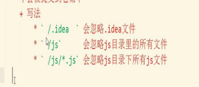

git----版本控制工具
其他版本控制工具：svn vss
好处：方便版本管理，可以任意回退到某一版本
git的使用：
1.在当前项目文件夹git init+enter----初始化git仓库，存放git对项目代码的备份文件（.git隐藏文件夹）
2.设置当前使用用户信息（备份时候会储存备份用户信息）
配置用户名：git config __global user.name "xxxx"
配置邮箱：git config __global user.email "xxxx"（必须满足邮箱格式，不一定要存在）
3.把代码储存到仓库中
- 把代码放到仓库门口（暂存区stage/index）--- 就是把要提交的所有修改放到暂存区（Stage）
$ git add ./文件名（文件路径）
$ git add ./或者 add .所有修改的文件添加到大门口（暂存区）
- 把代码放到仓库的房间（版本库.git）---把暂存区的所有修改提交到分支。
$ git commit -m "xxx"（提交代码的说明信息）
---不加-m会进入编辑器模式
---退出：esc+!q
$ git commit --all -m "xxxx"
把所有修改的文件一次性提交到版本库（直接从工作区跳到版本库）
$ git commit --am “xxxx”（仅仅对已经add过的文件有效，对新建的文件无效，必须按步骤执行）
（再次简化，跳到版本库）
- $ git status---查看当前文件有没有添加到版本库
4.git中的忽略文件
.gitignore,这个文件里设置需要被忽略的文件或者目录
被忽略的文件不会被提交到仓库中
在.gitignore中书写要被忽略的文件路径，以/开头
一行写一个路径
-----
.idea 忽略 .idea

5. git log 查看历史提交记录
git log --oneline 查看简洁版日志

(版本信息前的一串数字字母是版本号)
git reflog
6.版本回退
a.通过Head指针
git reset --hard Head~0--回退到最近一次提交的状态
git reset --hard Head~1--回退到最近一次提交的状态的上一次状态
b.通过版本号
$ git reset --hard 版本号
$ git reflog ---可以看到每次 版本号切换的记录
7.合并分枝
默认有一个主分支master
先创建分枝：
git
刚创建分枝时dev分枝和master分枝里的东西和master分枝一样
切换分支：
git checkout dev
git branch 查看当前有哪些分枝
合并分枝
git merge dev--把当前分枝（有星号的分枝）和指定分枝合并（先切换到主分支，再合并）
删除分支：
git branch -d 分支名
8.处理冲突
在不同分支上同时对一个文件作出修改，合并的时候就会出现冲突，需要手动处理：手动在文件上删除不需要的内容，留下需要的，然后提交,最后再合并
9.github（当做git服务器使用）
提供了通过git上传代码的功能，也需要有相应的仓库
git push url master//把当前分枝内容上传到远程master分枝上
git pull url master//把远程分枝内容下载到当前仓库master分枝上（要本地初始一个仓库），不会覆盖本地内容，只是合并
git clone url//会得到和远程仓库相同的数据---一毛一样，整个文件夹拿过来
git clone是把整个git项目拷贝下来，包括里面的日志信息，git项目里的分支，你也可以直接切换、使用里面的分支等等，而且同一地址在同一路径下只能克隆一次
git pull相当于git fetch和git merge。其意思是先从远程下载git项目里的文件，然后将文件与本地的分支进行merge，多次pull相当于不断与服务器更新

10.通过SSH方式上传代码
git方式安全性不高，SSH较安全
公钥，私钥--两者之间有关联
- 生成公钥和私钥
ssh-keygen -t rsa -C "邮箱"
- 在用户文件夹中打开公钥文件，复制之
- 打开github,在设置里点击ssh keys选项
粘贴公钥，之后的步骤和git方式相同
----push操作的优化：（不需要像以前一样一步步的写地址，push）
git remote add origin git@git.oschina.net:rabbcat/tester.git
git push -u origin master （u表示git会把当前分支和远程服务器进行关联，下一次再操作就只需要写git push）

11.冲突的解决：
本地修改文件，提交后会和服务器的同一个文件冲突，同样需要手动修改，然后提交
12.为什么要先pull,再push?（服务器的版本和本地的不一样，我们修改是在服务器最早版本的继承上修改的，另一方已经在这个最早版本上进行了修改，如果不pull，就相当于两者都在最早版本上做了修改，服务器不知道该听谁的，所以就有了冲突）
因为a在他那边提交了数次修改，b如果先把从服务器拿来的版本进行修改并提交就会和服务器冲突，就很难解决，所以需要先pull到本地，在本地修改冲突 ，然后再提交到服务器